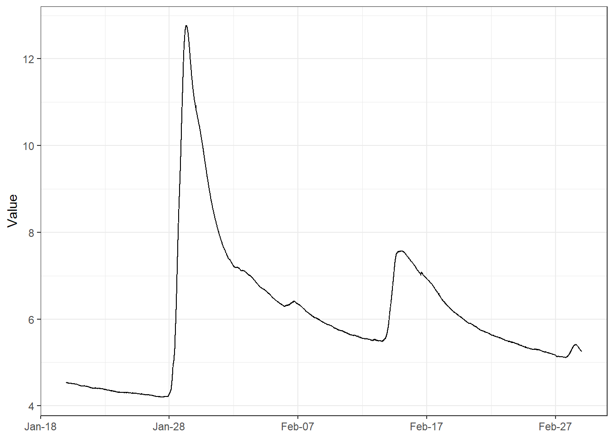
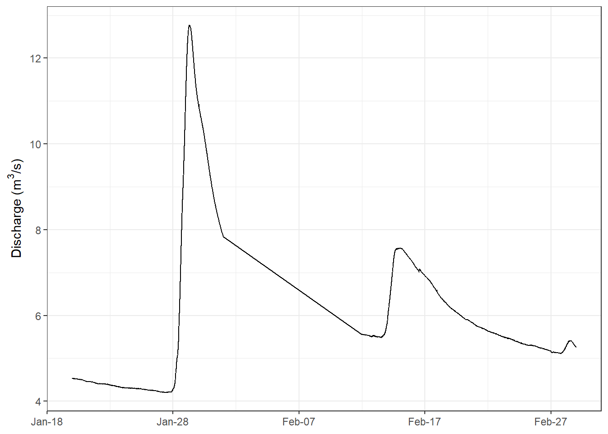
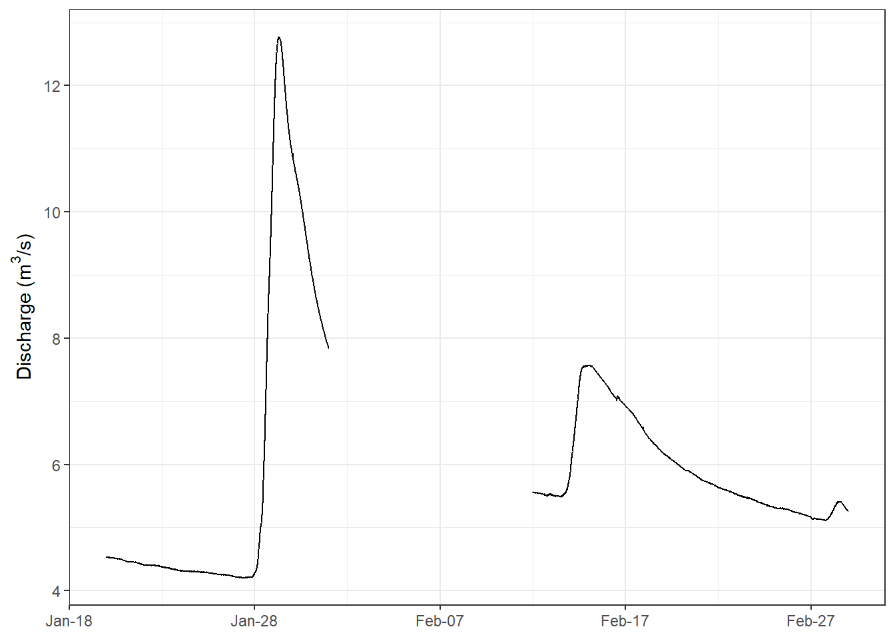
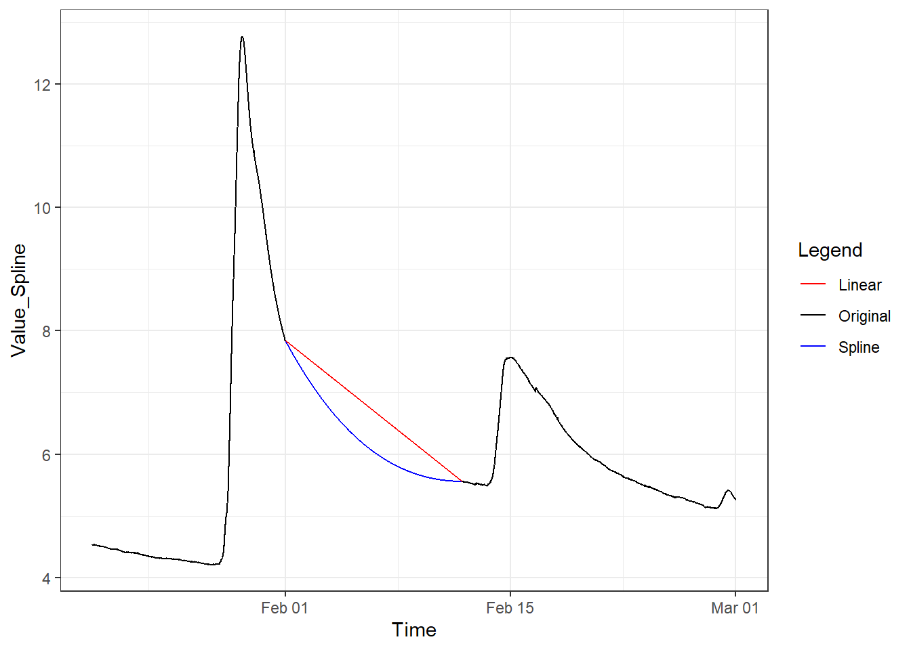
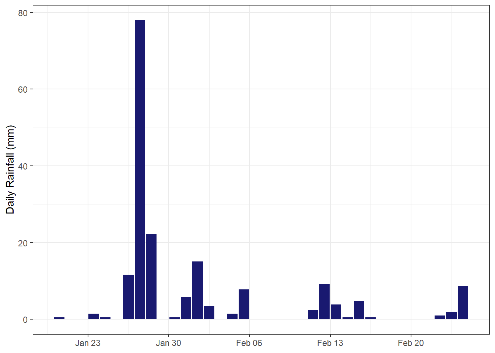
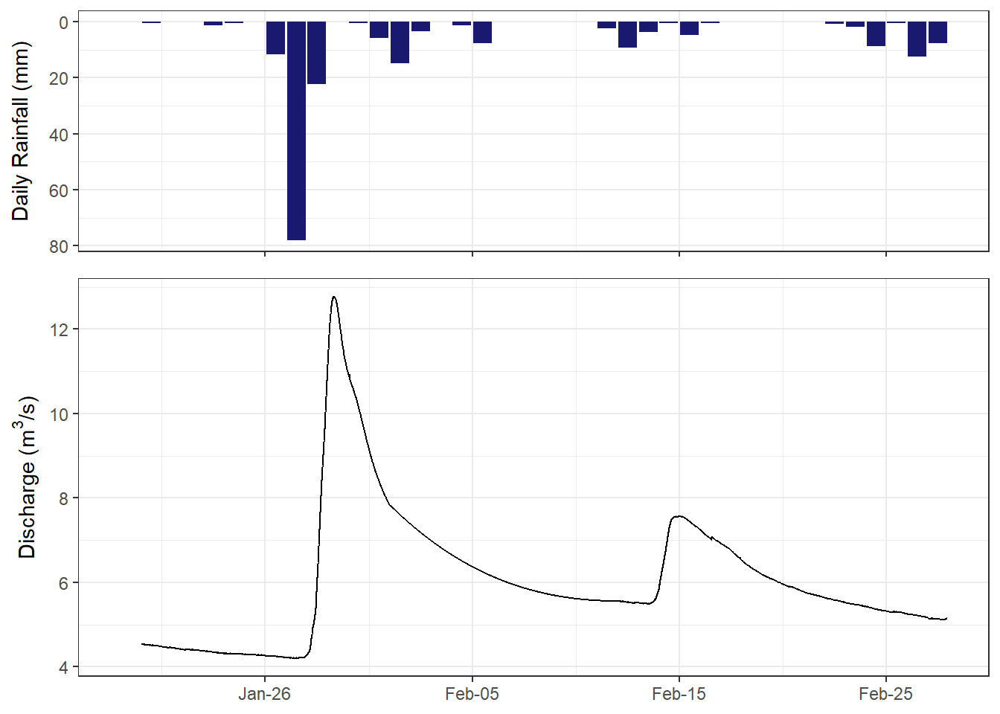
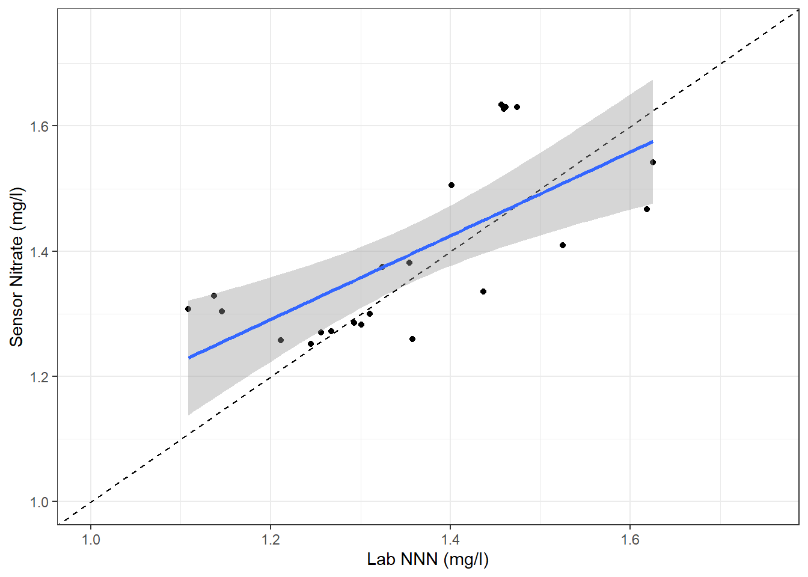

library(tidyverse)
library(padr)
library(zoo)
library(ggpubr)BOPRC R Tutorial 4 - Manipulating and plotting time series data: Part 2 (high frequency data)
1 Overview
This lesson is designed to provide you with experience in manipulating and plotting time series data.
The main packages that we will use in this tutorial are:
- tidyverse
- padr
- zoo
- ggpubr
Before attempting to install these packages, make sure your Primary CRAN Repository is set to:
- “New Zealand [https] - University of Auckland”
To check this, click ‘Tools’ –> ‘Global Options’ –> ‘Packages’. Click ‘Change’ if you need to adjust this.
You can download most packages by clicking on the ‘Install’ button on the ‘packages’ tab in the lower right window pane. Then in the Install Packages popup, select ‘Repository (CRAN)’ from the ‘Install from’ drop box and type the name of the package you wish to download (e.g., dplyr).
Once all of these packages are installed you can load them using the ‘library’ function:
Today we will be exploring high frequency data collected at the Rangitaiki at SH5 site, over the period of the 2023 Auckland Anniversary and Cyclone Gabrielle storm events. High frequency data can be extracted from the Aquarius database using the ‘getdata’ function, but to make things easier, these datasets have been pre-extracted and saved as a csv.
Let’s load the discharge dataset to see what we are working with.
Discharge_DF <- read.csv("./data/Rangitaiki_Discharge.csv")It’s good practice to inspect a dataset after importing it. You can use the ‘str’ function, but the ‘summary’ function provides more information.
Challenge 1: Use the ‘summary’ funtion to inspect Discharge_DF. What do you notice about the dataset? Can we plot Value vs. Time in it’s current state?
Click to see a solution
summary(Discharge_DF) Site LocationName Time Value
Length:11521 Length:11521 Length:11521 Min. : 4.202
Class :character Class :character Class :character 1st Qu.: 5.219
Mode :character Mode :character Mode :character Median : 5.745
Mean : 6.076
3rd Qu.: 6.699
Max. :12.776
Quality Approval Qualifiers Parameter
Min. :600 Length:11521 Mode:logical Length:11521
1st Qu.:600 Class :character NA's:11521 Class :character
Median :600 Mode :character Mode :character
Mean :600
3rd Qu.:600
Max. :600
Unit
Length:11521
Class :character
Mode :character
# We can see that 'Time' has been imported as a character. We will need to
# change this to a timestamp before attempting to plot the data, otherwise R
# will treat 'Time' as a discrete value rather than a continuous timescale.Let’s convert ‘Time’ to a proper timestamp. To do this, we need to tell R where to find important information (i.e., the year, month, day, hour, second). Take a look at the time column in ‘Discharge_DF’. See that the format is generally ‘DAY/MONTH/YEAR HOUR:MINUTE’. We would write this in R as “%d/%m/%Y %H:%M”.
There are a few exceptions - notice that midnight values have been reduced to ‘DAY/MONTH/YEAR’ (i.e., “%d/%m/%Y”) - this is Excel’s way of ‘helping’ us, because why would we need to state HOURS and MINUTES if they both equal zero? Luckily there is a function called ‘parse_date_time’ that allows us to provide a backup format to revert to if the initial format doesn’t quite fit. Don’t forget to specify the tz=“etc/GMT+12” as we will be using multiple datasets and want to ensure the times are comparable.
Discharge_DF <- Discharge_DF %>%
mutate(Time = parse_date_time(Time,orders = c("%d/%m/%Y %H:%M","%d/%m/%Y"),tz="etc/GMT+12"))
#the order of format preference is determined by the order in the list provided to "orders".Great! Notice that all timestamps are now in the format “YEAR-MONTH-DAY HOUR:MINUTE:SECONDS” (or “%Y-%m-%d %H:%M:%S”). This is R’s default way of storing timestamps, which aligns with the ISO 8601 standard for time and date representation. If your timestamps are NOT in this format then they are not recognised by R as a timestamp. Also be wary that just because your timestamps are in this format, doesn’t mean that R has recognised them as timestamps - they could have been imported as a ‘character’. It always pays to check.
Clear as mud? Right, let’s move on.
We can now plot the data to see what we are dealing with.
Discharge_DF %>%
ggplot(aes(x=Time,y=Value))+
geom_path()+
theme_bw()+
scale_x_datetime(date_breaks = "10 days", date_labels = "%b-%d")+ #%b represents the month as a short word
xlab(NULL) #we know the x axis represents time. I don't feel the need to show it.
This figure shows the discharge at ‘Rangitaiki at SH5’ between January 20th and March 1st 2023. The first discharge peak was caused by the Auckland Anniversary storm, the second was caused by Cyclone Gabrielle.
Notice that the y-axis is not labelled correctly. It should say something like “Discharge (m^3/s)”.
Challenge 2: Change the y axis label on this plot to ‘Discharge (m^3/s)’. Hint - ylab() changes the label on the y axis in ggplot. Bonus points if you can get R to recognise ^3 as a superscript.
Click to see a solution
Discharge_DF %>%
ggplot(aes(x=Time,y=Value))+
geom_path()+
theme_bw()+
scale_x_datetime(date_breaks = "10 days", date_labels = "%b-%d")+
xlab(NULL)+
ylab(expression(paste("Discharge (", m^3, "/s)")))#ylab('Discharge (m^3/s)') is also acceptable. Let’s say we wanted to quickly work out the peak values from these separate events. One (very rough) method could be to split the dataset in two - values before the 8th of Feb are attributed to the Auckland Anniversary event, and those after are attributed to Cyclone Gabrielle.
Discharge_DF %>%
mutate(Event = ifelse(Time <= as.POSIXct("2023-02-08"),"Auckland","Gabrielle")) %>%
group_by(Event) %>%
summarise(Max_Disc = max(Value,na.rm=T))# A tibble: 2 × 2
Event Max_Disc
<chr> <dbl>
1 Auckland 12.8
2 Gabrielle 7.58We can see that the Auckland Anniversary event peaks at 12.8 m^3/s and the Cyclone Gabrielle event peaks at 7.58 m^3/s. For context, the maximum flow recorded at this site over the past 10 years is 14.01 m^3/s. We could extract the entire discharge record from this site to work out the flow percentile, or you could just trust me that the Auckland event is in the top 1% of flows recorded at this site, and the Gabrielle event is in the top 2%.
2 Data gaps
Continuous data is always subject to data gaps, e.g., a sensor might fail and need to be fixed, or it could become fouled with algae and start producing unusable data.
Let’s assume the discharge data between “2023-02-05” and “2023-02-12” is unusable and has been removed from the dataset. The code below removes this section from our dataset. Note the use of the ‘|’ operator which means ‘OR’ in R language, i.e., Time is less than “2023-02-05” OR greater than “2023-02-12”.
Discharge_DF_Gaps <- Discharge_DF %>%
filter(Time < as.POSIXct("2023-02-01",tz="etc/GMT+12")|Time >= as.POSIXct("2023-02-12",tz="etc/GMT+12"))We can plot this in the same way as above.
Discharge_DF_Gaps %>%
ggplot(aes(x=Time,y=Value))+
geom_path()+
theme_bw()+
scale_x_datetime(date_breaks = "10 days", date_labels = "%b-%d")+
xlab(NULL)+
ylab(expression(paste("Discharge (", m^3, "/s)")))
Notice that there is no gap in the figure. This is because the dataset continues from the 4th Feb to 13th Feb with no gaps to represent the missing data. Therefore, ggplot assumes that the 4th Feb is connected to the 13th Feb and directly connects the two points with a straight line. This is common when extracting continuous data from our aquarius database as the extraction process does not include gaps. Obviously this is not representative of the actual timeseries dataset, and can be misleading to people interpreting the plot.
Fortunately, there is a very handy package called ‘padr’. This package is made for timeseries data and will interpret the frequency of your data and ‘pad’ your dataset (insert gaps) where there is missing data. See what happens when we introduce the ‘pad()’ function to our tidyverse pipeline.
Discharge_DF_Gaps <- Discharge_DF_Gaps %>%
pad()
Discharge_DF_Gaps %>%
ggplot(aes(x=Time,y=Value))+
geom_path()+
theme_bw()+
scale_x_datetime(date_breaks = "10 days", date_labels = "%b-%d")+
xlab(NULL)+
ylab(expression(paste("Discharge (", m^3, "/s)")))
Padr has automatically detected a 5 minute interval, and ‘padded’ our dataset, ensuring there is a row for every timestep. This is much more representative of our dataset.
3 Interpolation
It may be appropriate to interpolate over gaps in certain instances. There are a couple of useful functions in the ‘zoo’ package that can help with this - ‘na.approx()’ and ‘na.spline()’. Both methods use pre and post gap information to estimate values across the gap. The first method ‘na.approx()’ uses a linear interpolation method, while ‘na.spline()’ uses a polynomial method. You can see what these look like below.
#create new columns that interpolate na values using either method.
Discharge_DF_Gaps <- Discharge_DF_Gaps %>%
mutate(Value_Spline = na.spline(Value)) %>%
mutate(Value_Linear = na.approx(Value))
Discharge_DF_Gaps %>%
ggplot() +
geom_path(aes(x = Time, y = Value_Spline, color = "Spline")) +
geom_path(aes(x = Time, y = Value_Linear, color = "Linear")) +
geom_path(aes(x = Time, y = Value, color = "Original")) +
scale_color_manual(name = "Legend",
values = c("Spline" = "blue", "Linear" = "red", "Original" = "black")) +
theme_bw()
It looks like the spline method interpolates our data better in this case as the linear method is not realistic. Note that neither method is perfect - we lose the small bumps that are observed in the untouched record as they can’t be estimated from remnant data.
We will use the spline record from this point onwards.
4 Thickening
Another great function in the ‘padr’ package is ‘thicken()’. This will create an additional column with timestamps at a reduced frequency. For example, you might thicken a 5 minute dataframe to an hourly dataframe, or even daily dataframe. You can plug this into the tidyverse pipeline to summarise the dataset at the new frequency.
Let’s thicken our new spline interpolated dataset to hourly and daily intervals.
#this is the dataset thickened to hourly intervals
Hourly_Disc <- Discharge_DF_Gaps %>%
select(Site, LocationName, Time, Value_Spline) %>%
thicken(by = 'Time', interval = 'hour',colname = 'Hour_Stamp') %>%
group_by(Hour_Stamp) %>%
summarise(Value = mean(Value_Spline,na.rm=T))
head(Hourly_Disc)# A tibble: 6 × 2
Hour_Stamp Value
<dttm> <dbl>
1 2023-01-20 00:00:00 4.53
2 2023-01-20 01:00:00 4.53
3 2023-01-20 02:00:00 4.53
4 2023-01-20 03:00:00 4.53
5 2023-01-20 04:00:00 4.53
6 2023-01-20 05:00:00 4.53Challenge 3: Thicken and summarise the ‘Discharge_DF_Gaps’ dataset to a daily timestamp. Assign this new dataset the name ‘Daily_Disc’
Click to see a solution
#this is the dataset thickened to daily intervals
Daily_Disc <- Discharge_DF_Gaps %>%
select(Site, LocationName, Time, Value_Spline) %>%
thicken(by = 'Time', interval = 'day', colname = 'Day_Stamp') %>%
group_by(Day_Stamp) %>%
summarise(Value = mean(Value_Spline,na.rm=T))
head(Daily_Disc)# A tibble: 6 × 2
Day_Stamp Value
<date> <dbl>
1 2023-01-20 4.51
2 2023-01-21 4.45
3 2023-01-22 4.40
4 2023-01-23 4.35
5 2023-01-24 4.31
6 2023-01-25 4.28Notice that the ‘Day_Stamp’ is of the class ‘date’. This will make it difficult to compare to the ‘Hour_Stamp’ which is in the class ‘S3:POSIXct’. We will adress this further down.
Let’s plot the hourly record. However, this time we will save the plot as a png file using ‘ggsave()’. Note that We need to assign the plot to an object (Hourly_Disc_Plot) to do this.
#this is a plot object of hourly discharge
Hourly_Disc_Plot <-
Hourly_Disc %>%
ggplot()+
geom_path(aes(x=Hour_Stamp,y=Value))+
theme_bw()+
xlab(NULL)+
ylab(expression(paste("Discharge (", m^3, "/s)")))+
ggtitle("Hourly Average")+
scale_x_datetime(date_breaks = "10 days",
date_labels = "%b-%d",
limits = c(as.POSIXct("2023-01-20"), as.POSIXct("2023-03-01")))
ggsave(plot = Hourly_Disc_Plot,filename = "Hourly_Disc.png",dpi=300)Warning: Removed 25 rows containing missing values or values outside the scale range
(`geom_path()`).You should now have a file in your project folder called ‘Hourly_Disc.png’.
Challenge 4: Create a figure for the daily discharge object you created above and save it as ‘Daily_Disc.png’.
Click to see a solution
Daily_Disc_Plot <-
Daily_Disc %>%
mutate(Day_Stamp = as.POSIXct(Day_Stamp, tz="etc/GMT+12")) %>%
ggplot()+
geom_path(aes(x=Day_Stamp,y=Value))+
theme_bw()+
xlab(NULL)+
ylab(expression(paste("Discharge (", m^3, "/s)")))+
ggtitle("Daily Average")+
scale_x_datetime(date_breaks = "10 days",
date_labels = "%b-%d",
limits = c(as.POSIXct("2023-01-20"), as.POSIXct("2023-03-01")))
ggsave(plot = Daily_Disc_Plot,filename = "Daily_Disc.png",dpi=300)Warning: Removed 1 row containing missing values or values outside the scale range
(`geom_path()`).These figures are useful, but it would be better if they were arranged in one figure so we could directly compare them. This is where the package ‘ggpubr’ comes in handy. This package has a function called ‘ggarrange()’ which allows you to arrange discrete plot objects in a combined format - particularly useful for publications. We will add in the original 5min dataframe so we gain a good understanding of how thicken affects our data.
#create a plot for
Original_Plot <- Discharge_DF_Gaps %>%
ggplot()+
geom_path(aes(x=Time,y=Value_Spline))+
theme_bw()+
xlab(NULL)+
ylab(expression(paste("Discharge (", m^3, "/s)")))+
ggtitle("Original 5min Data")+
scale_x_datetime(date_breaks = "10 days",
date_labels = "%b-%d",
limits = c(as.POSIXct("2023-01-20"), as.POSIXct("2023-03-01")))
Combined_Plot <- ggarrange(Original_Plot,Hourly_Disc_Plot, Daily_Disc_Plot, nrow=3, align="v")Warning: Removed 300 rows containing missing values or values outside the scale range
(`geom_path()`).Warning: Removed 25 rows containing missing values or values outside the scale range
(`geom_path()`).Warning: Removed 1 row containing missing values or values outside the scale range
(`geom_path()`).Challenge 5: Save the combined ggarrange plot as a png with a dpi=300, height=6, and width = 8.
Click to see a solution
ggsave(plot = Combined_Plot,filename = "Disc_Comparison_Plot.png",dpi=300,height=6,width=8)
# Units are in inches as a default, but you can change them by specifying the units as either "in", "cm", "mm", "px". 5 Introducing other datasets
We can also access other datasets that might provide more context for our discharge data. The most obvious is rainfall data. The nearest rainfall site to ‘Rangitaiki at SH5’ is a site called ‘Te Whaiti at Minginui’.
Rainfall data can be imported in the same way as discharge data. We also need to convert the time column to a timestamp.
Challenge 6: Import the ‘TeWhaiti_Minginui_Rainfall.csv’ file located within the data folder. Once you have imported it, convert the Time column to a proper timestamp using ‘parse_date_time’.
Click to see a solution
Rainfall_DF <- read.csv("./data/TeWhaiti_Minginui_Rainfall.csv")
Rainfall_DF <- Rainfall_DF %>%
mutate(Time = parse_date_time(Time,orders = c("%d/%m/%Y %H:%M","%d/%m/%Y"),tz="etc/GMT+12"))Take a look at the rainfall dataset. Notice that rainfall data seems to be recorded in on an hourly basis OR when the tipping bucket mechanism triggers (i,e., there is enough liquid in the bucket to cause it to tip). The data is recorded in increments of 0.48mm (which I assume is equivalent to the volume of one bucket).
This means that we are going to have to manipulate the dataset to gain any useful information. The obvious solution is to calculate the sum of rainfall that accumulates over a set period.
We can easily do this using a combination of ‘thicken()’ and ‘summarise()’.
Let’s calculate and plot the total daily rainfall for this site. Note that thicken will create a column called ‘Time_day’ by default. This column will be in a date format because we are summarising per day.
Rainfall_DF %>%
thicken(interval = "day") %>%
group_by(Time_day) %>%
summarise(Daily_Rainfall = sum(Value,na.rm=T)) %>%
mutate(Time_day = as.POSIXct(Time_day,tz="etc/GMT+12")) %>%
ggplot()+
geom_bar(stat="identity",aes(x=Time_day,y=Daily_Rainfall),fill="midnightblue")+
theme_bw()+
xlab(NULL)+
ylab("Daily Rainfall (mm)")+
xlim(as.POSIXct("2023-01-20",tz="etc/GMT+12"),as.POSIXct("2023-02-25",tz="etc/GMT+12"))Warning: Removed 5 rows containing missing values or values outside the scale range
(`geom_bar()`).
Great, this seems to align with our previous discharge figures. However, it would be better if we could bring rainfall and discharge together and align their x axes. This type of figure is common in hydrology, and rainfall is often plotted as a second y axis with is reversed so that the bars come down from the top. However, R is really against using dual y axes. See this article if you want to read about it. You can force R to do this, but everything feels a bit ‘hacky’, i.e., you end up forcing ggplot to do things it doesn’t want to do.
We will abide by R’s plotting rules and use ‘ggarrange()’ to create a similar figure that is more widely accepted by data enthusiasts.
First we need to modify the rainfall figure so that the rainfall comes down from the top of the figure. We will also change the format of ‘Time_day’, which is currently a date class, to a POSIXct class, so that it aligns with the higher frequency discharge axis. Finally, we will remove the x labels because we don’t need them; everything will be aligned with the discharge axis.
We will also recreate the discharge plot without a title.
Rainfall_Plot <- Rainfall_DF %>%
thicken(interval = "day") %>%
group_by(Time_day) %>%
summarise(Daily_Rainfall = sum(Value,na.rm=T)) %>%
mutate(Time_day = as.POSIXct(Time_day,tz="etc/GMT+12")) %>%
ggplot()+
geom_bar(stat="identity",aes(x=Time_day,y=Daily_Rainfall),fill="midnightblue")+
scale_y_reverse()+
theme_bw()+
xlab(NULL)+
theme(axis.text.x=element_blank())+
ylab("Daily Rainfall (mm)")+
scale_x_datetime(date_breaks = "10 days",
date_labels = "%b-%d",
limits = c(as.POSIXct("2023-01-20"), as.POSIXct("2023-03-01")))
Discharge_Plot <- Discharge_DF_Gaps %>%
ggplot()+
geom_path(aes(x=Time,y=Value_Spline))+
theme_bw()+
xlab(NULL)+
ylab(expression(paste("Discharge (", m^3, "/s)")))+
scale_x_datetime(date_breaks = "10 days",
date_labels = "%b-%d",
limits = c(as.POSIXct("2023-01-20"), as.POSIXct("2023-03-01")))Now we can use ggarrange to position this above the discharge figure. We will add one more argument to this function, called ‘heights’. This specifies the relative heights of the two panels. In this case we will make the top panel 0.6 (60%) of the height of the bottom panel.
ggarrange(Rainfall_Plot, Discharge_Plot,align="v",nrow=2,heights = c(0.6,1))Warning: Removed 1 row containing missing values or values outside the scale range
(`geom_bar()`).Warning: Removed 300 rows containing missing values or values outside the scale range
(`geom_path()`).
Challenge 7: This site also has a continuous nitrate sensor (thanks Erin and the EIS team). The data record is also stored in the data folder. See if you can import this data and add it to the figure above. Once you have done that, save the entire combined figure as a png file with dpi=300, height=6, and width=8. I suggest adding Nitrate as the middle panel, which means that you will need to use ‘theme(axis.text.x=element_blank())’ to remove x axis labels.
Click to see a solution
Nitrate_DF <- read.csv("./data/Rangitaiki_Nitrate.csv")
Nitrate_DF <- Nitrate_DF %>%
mutate(Time = parse_date_time(Time,orders = c("%d/%m/%Y %H:%M","%d/%m/%Y"),tz="etc/GMT+12"))
Nitrate_Plot <- Nitrate_DF %>%
ggplot()+
geom_path(aes(x=Time,y=Value))+
theme_bw()+
xlab(NULL)+
ylab("Nitrate (mg/l)")+
theme(axis.text.x=element_blank())+
scale_x_datetime(date_breaks = "10 days",
date_labels = "%b-%d",
limits = c(as.POSIXct("2023-01-20"), as.POSIXct("2023-03-01")))
Combined_Plot <- ggarrange(Rainfall_Plot, Nitrate_Plot, Discharge_Plot,align="v",nrow=3,heights = c(0.6,1,1))Warning: Removed 1 row containing missing values or values outside the scale range
(`geom_bar()`).Warning: Removed 99 rows containing missing values or values outside the scale range
(`geom_path()`).Warning: Removed 300 rows containing missing values or values outside the scale range
(`geom_path()`).ggsave(plot = Combined_Plot, filename = "Combined_Rain_Nitrate_Disc.png",width=8,height=6,dpi=300)6 Merging Data
In this final example we will see how our nitrate sensor compares against discrete NNN measurements from lab samples. Discrete lab samples are collected as part of a routine monthly run or via autosampler as part of a storm event sampling programme (thanks again Erin and EIS). These samples will not line up exactly with our high-resolution dataset, so we can’t just look up the nitrate reading at that time.
Let’s read in the discrete lab samples and convert ‘Time’ to a proper timestamp.
Lab_Samples <- read.csv("./data/Rangitaiki_NNN.csv")
Lab_Samples <- Lab_Samples %>%
mutate(Time = parse_date_time(Time,orders = c("%d/%m/%Y %H:%M","%d/%m/%Y"),tz="etc/GMT+12"))Notice that the timestamps for this dataset are generally at an inconsistent frequency, where the timestamps for the continuous nitrate are every 15 minutes.
The trick to merging these datasets is to develop a timestamp that matches both datasets, i.e., a unique variable that we can merge with.
Let’s create a new column in the Lab_Samples dataframe where the timestamp is rounded to the nearest 15 minutes. We can use our friend ‘thicken()’ to do this.
Lab_Samples <- Lab_Samples %>%
thicken(interval = "15 min")
head(Lab_Samples %>% select(Time, Time_15_min)) Time Time_15_min
1 2023-01-26 14:52:00 2023-01-26 14:45:00
2 2023-01-27 21:40:00 2023-01-27 21:30:00
3 2023-01-27 21:47:00 2023-01-27 21:45:00
4 2023-01-27 21:56:00 2023-01-27 21:45:00
5 2023-02-02 08:43:00 2023-02-02 08:30:00
6 2023-02-02 12:42:00 2023-02-02 12:30:00Now we can merge the two datasets by the new timestamp. We probably don’t want all of the extra columns in the Lab_Samples or Nitrate_DF datasets, so we will limit this to the bare minimum using ‘select()’.
The merging process will be carried out by the ‘merge()’ function, which is part of base R (you don’t need a package). We need to tell this function the name of the variable in each dataset that we are merging by. Merge will rename column headings ‘COLUMN.x’ or ‘COLUMN.y’ if the names are identical between the two datasets, which will result in ‘Value.x’ and ‘Value.y’ in the example below. Therefore, we have used the ‘rename()’ function to make these more intuitive.
Merged_Nitrate_DF <- merge(Lab_Samples %>%
select(Time_15_min,Value),
Nitrate_DF %>% select(Time,Value),
by.x="Time_15_min",
by.y="Time") %>%
rename("Lab"=Value.x, "Sensor" = Value.y)
head(Merged_Nitrate_DF) Time_15_min Lab Sensor
1 2023-01-26 14:45:00 1.4591 1.6277
2 2023-01-27 21:30:00 1.4566 1.6341
3 2023-01-27 21:45:00 1.4615 1.6303
4 2023-01-27 21:45:00 1.4739 1.6303
5 2023-02-02 08:30:00 1.1458 1.3033
6 2023-02-02 12:30:00 1.1082 1.3076Finally, let’s create a plot to see how these values compare to each other!
Challenge 8: Create a simple geom_point plot that compares Lab readings and Sensor readings. Label the each axis with either ‘Sensor Nitrate (mg/l)’ or ‘Lab NNN (mg/l)’. Set the axis limits so they are the same using ‘xlim(1,1.75)’ and ‘ylim(1,1.75)’. Add a reference 1:1 line using ‘geom_abline(slope = 1,lty=2)’. Finally let’s add a linear model using ‘geom_smooth(method = ’lm’)’. What can you determine about the sensor vs lab relationship over this time period?
Click to see a solution
Merged_Nitrate_DF %>%
ggplot(aes(x=Lab,y=Sensor))+
geom_point()+
theme_bw()+
ylab("Sensor Nitrate (mg/l)")+
xlab("Lab NNN (mg/l)")+
geom_abline(slope = 1,lty=2)+
xlim(1,1.75)+
ylim(1,1.75)+
geom_smooth(method = 'lm')
#it looks like the sensor slightly over-predicts at low concentrations and under-predicts at high concentrations.